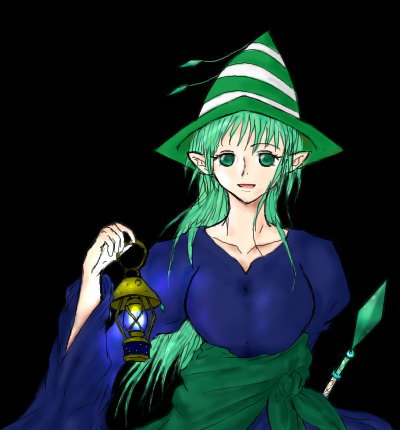
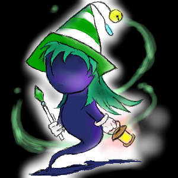

ユイールのこと。
新月の闇が支配する夜にだけ目覚める、純粋なるカゲ族の少女。
管理人と出会い、永遠に新月の闇が支配するこの地の案内人を任されている。

性別・・♀ 一人称・・私（わたくし）もしくは（わたし）
年齢・・不詳
管理人命名。
名前の由来は、フランス語の「導く」＝conduire・・コンデュイール、から。
普段は営業微笑スマイル。でも他は大抵無表情。言葉使いは淡々。
さりげなく、たまに真顔でひどい＋冷たい事を言いやがります。
「冷淡」の闇から生まれた影の一族。
得意魔法は、風の魔法。烈風の刃、との異名を持ちます。
ちなみに原型。約１〜２年前に描いたので色々酷いです（orz）
ランプや装飾が色々変わりました。その内原型も新しいものに変えますね；



漆黒の闇に生きる者
取り扱いカップリングの説明などなど。
…シリアスの標的になりがちな人など。
お取り扱い説明書：ノーマルカップリング
左の子が攻めで右の子が受けです。（笑
————————————————————————
基本形
マリオ×ピーチ姫
ラブラブラブ。
クッパ→ピーチ姫
報われない大王様。
————————————————————————
マリスト
レサレサ×パレッタ
お互いに三歩進んで二歩下がるといった感じですが、
ちゃんと少しずつ進んでるんです。
クリオ×ピンキー
なんとかかんとか両想い。もしかしたらピンキー×クリオかも。
でも本人たちにあんまりその気はありません。幸せ者め。
カメキ→ピンキー（…
はーい片思ーい！…ご、ごめんなさい。
カメキは、ピンキーがクリオ好きなの知ってて、でも僅かな希望を捨てれずに思ってるとか。
ポコピー×ポコナ
大丈夫、彼らは何の心配もなくラブラブです。
————————————————————————
ペパマリ
ノコリン×ノコタロウ
ラブラブ。最近はノコタロウもたまにリードするようになってきたとか。ヘタレ攻め。
チビヨッシー→クリスチーヌ
でもどちらかというと大切なお姉さん的に思ってる。恋なのかは謎です。
クリスチーヌ→マリオ
公式だろ？（違う
マリオ×チュチュリーナ
ぼ、某さんの影響で！(笑）マチュマチュー！ｖＶ
テック→ピーチ姫
好きなんだもん。テックはずうっと姫様に恋をしてます。
ルイージ→エクレア姫
…頑張れ。
特例
カメキ→クリスチーヌ
浮気じゃなくって！！！（叫
ただ単に考古学の先輩として尊敬してるだけです。
しかしその裏にほのかな恋心があるのにカメキ自身も気づいていません。
————————————————————————
メテオス
ヒュージィ♂×フォルテ♀
ヒュジフォル。音楽コンビ。
臆病な女の子と呑気な男の子って正反対コンビでいいじゃないか！
フォルテの子の名前（というかニックネーム）はルテ。本名は別にあります。
ヒュージィもそんなルテ相手に最初は偽名を教えます。小説ＵＰまでもうちょっと待ってくださ…orz
地上アナサジ♀×地下アナサジ♂
…運命は残酷です。我が家では、地上アナサジの女の子はテラ、地下アナサジの男の子はタータといいます。
イメージソングはアゲハ蝶ｄ（略）
ジオライト♂×オレアナ♀
王道、ということで！（笑）我が家のジオライトの名前はパスカル、オレアナはセノーテと言います。
詳しくはまだまだ妄想中。
ヘブンズドア♂×ジオライト♀
テラタタ並にシリアスカップリング。交わりきれない時間…なんてね。
我が家のヘブンズはとても長命かつ色々と妙な設定があるんです。まだ色々設定練りこみ中。
サボン♂×フロリアス♀
ふわふわ。ふわふわ。おっとりしたカップルです。イメージはあるけどまだ妄想中。
フロリアス♂×ウドー♀
…違うんです、違うんです、こっちはフロが男なんです。こちらもイメージ。
——境界線——————————————
アーニマ♀×アーニマ♂
ちょっと裏にしかおけないような。狂いカップル。
ヒントですか？……カマキリの夫婦って最終的にどうなるか知ってます？（……）
ギガントガッシュ♀（総攻め）
惚れられたら最後、捕まえられて喰われます。カオス。本人に悪気は無い。
ゲルゲル♀（総攻め）
総攻めになるのはお相手が絶対に見つからないから。絶対に誰とも一緒になれないから。
誰かと仲良しになっても、別離が不安になると（マグマの身体だから）呑みこんじゃうのさ。
誰か相手出来るのか、この子は。
————————————————————————
その他モロモロ個人的趣味。裏日記あたりで描くかも。
ロストマジック
アイザック×トリスティア
やっぱり、ほら、主人公だし、ね？
ＭＯＴＨＥＲ
クマトラ×ダスター
やっぱり姫様はリュカも良いけどダスターに恋をしていれば良い。
————————————————————————
四勇者
まだ出てないキャラが多いので名前だけ。いくらでも想像してください（にこ。
カーレッジ×ノン
プレア→カーレッジ
クリスケ×ウィッシュ（クリスケ←ウィッシュ？
クリース→プレア
キノール→ローズマリー（…×か？
レギュラーではないけれど。
ピアル×ノータス
—————————————————————————————
待ってたぜ。
お取り扱い説明書：アブノーマルカップリング
左→攻め
右→受け
です。
————————————————————————
マリオ系（すべからくノーコメント
マリオ×ルイージ
ランペル×ビビアン
コルテス×マルコ
コルテス×コンポビー
ビビアン→マリオ
メテオス系は今の所ないです。
ロストマジック
セネカ（黄昏の歌姫）→トリスティア
姉妹愛。というか、その域超えてるよ。アレ。
ゲーム中で愛してるなんて言っちゃダメ。…好物だから構いやしないが！（あー
レオナルド×アイザック
………。あ、あはは…！（逃走
四勇者
クリスケ×カーレッジ
ご め ん な さ い ！ ！
…その、あれです、実際的には＋と×の中間です！お互いにすっごく大切ですが、恋情はありません！！
…とは言 うもの の。
はい、四勇者本編中では彼らはくっ付いてませんとも。仲良しなだけです。＋と×の中間です。
……本編中では。
ここ、新月の夜では、「第三次創作だ」と言い訳して星詩が完全に＋ではなく×なクリスケとカーレッジを書く事も。
閲 覧 自 己 責 任 ぷ り ー ず。
えー…メニューのクリカレカップル定義でも後は見てください。げふんげふん。
あ、ちなみに↑のクリスケ×カーレッジってのは普段に限定してです。普段普段。いつもの態度。
クリスケが甘え半分でじゃれついてカーレッジがあーよしよしみたいな。
でもいざって時はカーレッジヘタレ攻め×クリスケ誘い受けです。ぎゃ——す。
はーい後はノーコメント！
テレサル×テレック
ターベル×テレック（…クリカレと同レベルです。恋情は多分 きっと おそらく 無い はず。
テレサル→（一方的）スターライト
そのうち増えたりするかも ね。
・
—————————————————————————————
大抵シリアスの餌食になる人たち。もしくは裏常連
マリオ系
コルテス
ビビアン
ランペル
影の女王
メテオス系（作品になっていない、設定だけキャラは名前伏せてあります）
地上アナサジ♀（テラ）、地下アナサジ♂（タータ）、ヘブンズドア全員
ゲルゲル♀、ギガントガッシュ♀、アーニマ♀、グランネスト♂（アウリオ）、コロニオン♂
惑星メテオス
ロストマジック系
全 員みたいな？（…）
あのバッドエンディングはすごすぎるだろう。
アイザックとかトリスティアとかレオナルドとか黄昏の歌姫とか。…ね、全員。
だってさ、
大いにネタバレです、ご注意↓
「バッドエンドの選択肢選んだらアイザック黄昏の歌姫に操られちゃって（？）賢者殺しまくって、（レオナルドも
最悪バッドエンディングの場合はトリスティアまで殺して、それで最後に黄昏の歌姫にアイザック結局殺されて終わりだよ？」
どこが全年齢向けゲームなんだ、どこが！（笑） 私はグッドエンディングになれて良かったなあ…！；危なかった！
ＭＯＴＨＥＲ系
リュカ、もしくはクラウス。とりあえずＭＯＴＨＥＲ系はシリアスに引っ張り出されやすいです。
四勇者系
クリスケ
カーレッジ
（↑２名はダントツ。
キノール
テレック
テレサル
プレア
ホープ
ウィッシュ
リーム
ローズマリー
…多いなオイ。
本編にまだ出てない人は、本編で登場できるまで出待ち状態です。
.
.